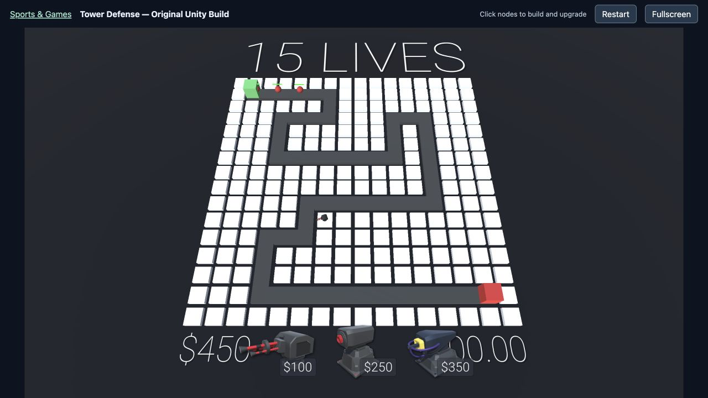

Unity
Tower Defense
Overview
The player manages a defensive layout while enemies advance along a route.
The player manages a defensive layout while enemies advance along a route. Placement decisions matter because a defense is useful only where it can affect approaching threats. The project’s overview brings together the route, the available defensive interaction, and the progression of an encounter; the separate demo provides the playable version where one has been published.
What it includes
- Defense placement
- Enemy routes
- Wave-based encounters
